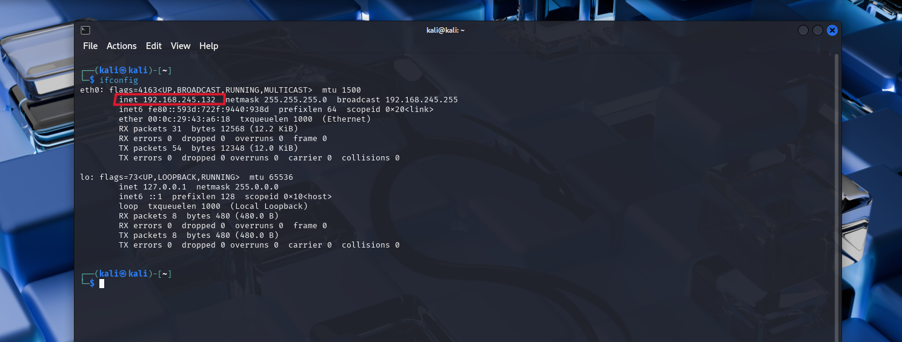
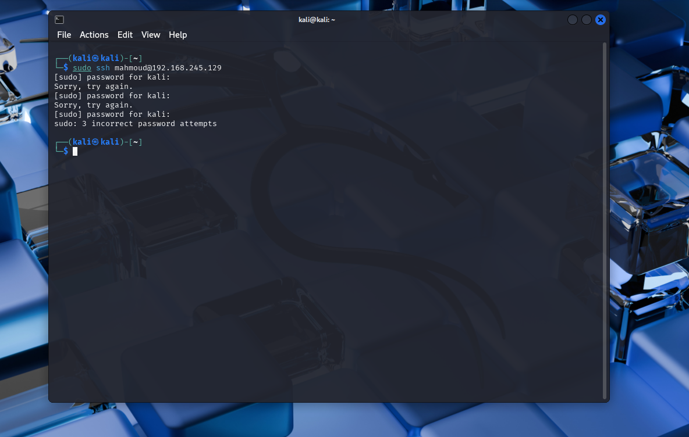
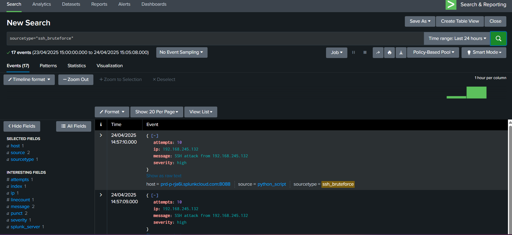
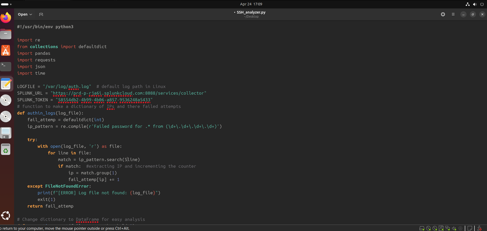
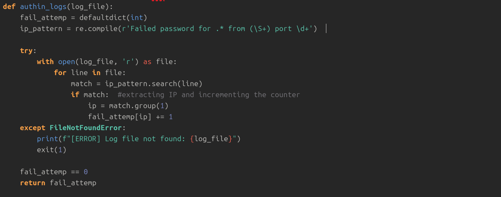
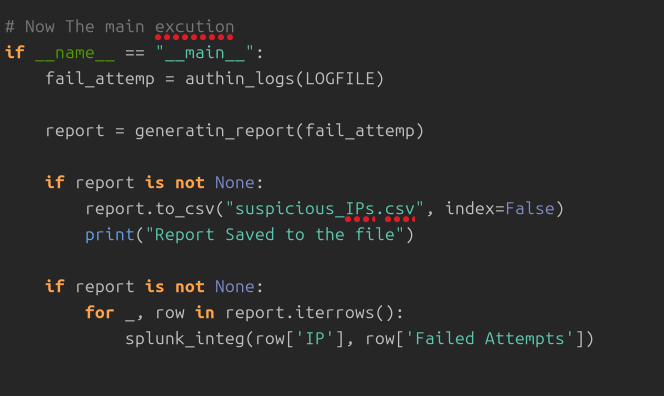
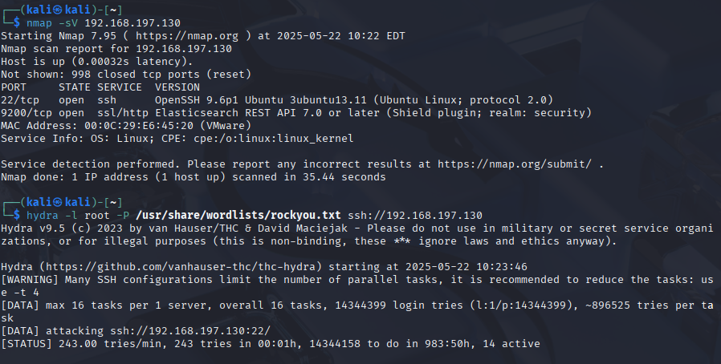
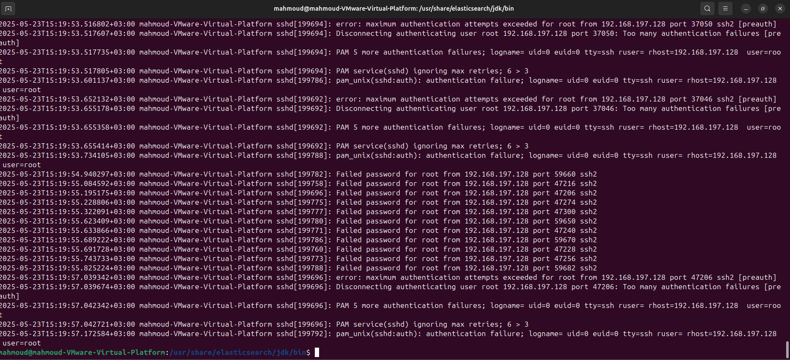
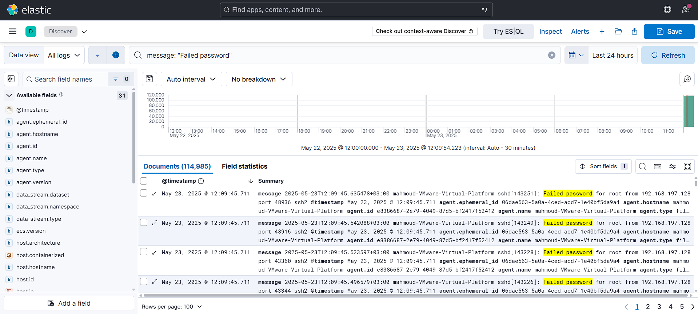
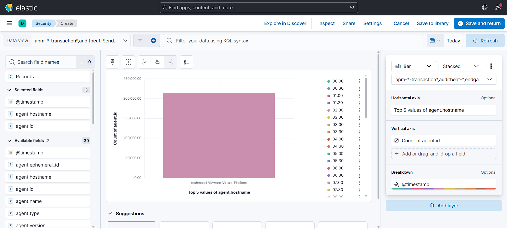

case files
Structured learning paths covering core cybersecurity concepts, worked hands-on through TryHackMe's rooms and challenges.
A Python script that parses SSH logs to flag suspicious activity, built to plug into a SIEM for ongoing monitoring.
detects
integration
output & interface



code



introduction
A simulated Security Operations Center built in a home lab, created to develop and demonstrate the skills a SOC Analyst Level 1 role needs day to day.
objectives
tools & technologies
lab architecture
lab screenshots



